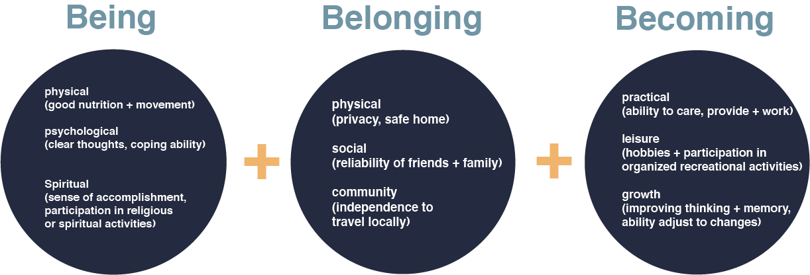
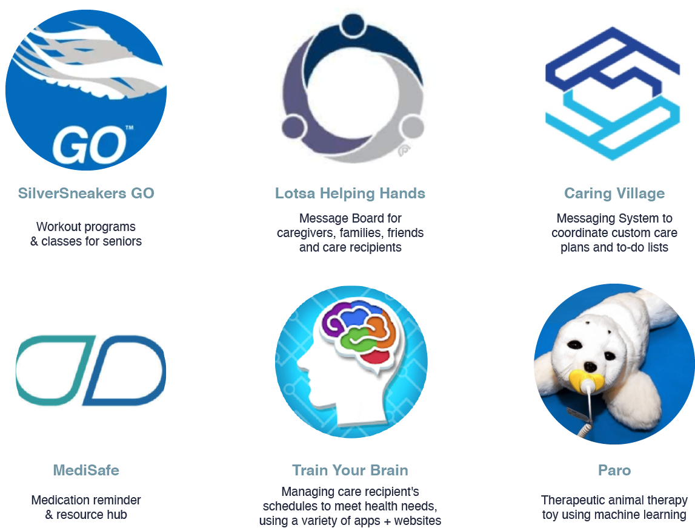
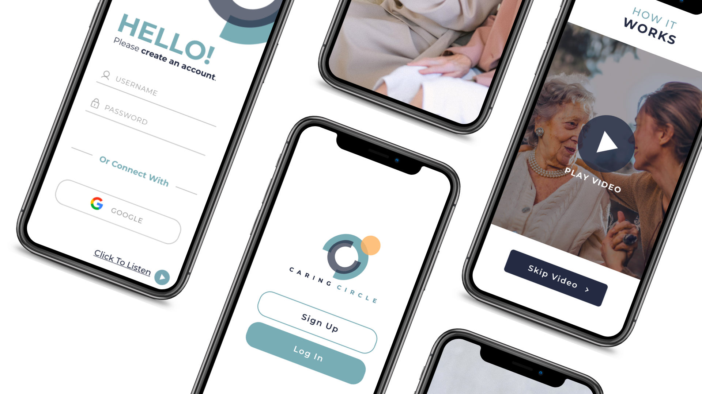

Older Adults age 50 and over seeking to maintain or improve their mental and physical health and wellness
Our person-centred product is designed to motivate older adults to engage in health-promoting self-care behaviours to foster successful aging
Successful aging is the meeting of needs of older adults for a better quality of life
Older adults are less likely to report psychiatric symptoms and more likely to emphasize physical complaints. Some signals of mental health decline in seniors include: confusion, disorientation, depressed mood,
social withdrawal, thoughts of suicide, unexplained fatigure, etc.
57% of adults are confused about what healthy eating means. This confusion is greatly influenced by the media. According to Traditional Chinese Medicine (TCM)'s theories, foods are an important and inexpensive source of therapyfor sustaining health and treating disease
Digital products discriminate against seniors and fail to meet both accessible design and an inclusive content strategy. De-prioritization of designing interfaces and experiences for people with disabilities may be due to lack of awareness
to issues of accessibility or is attributed as the responsibility of a small subset of the design community.
Competitors in today's mobile health and wellness market feature the following app themes: medication logging and reminders, secure messaging system between families and care recipient, wellness journals, centralized calendar, fitness companions and brain training games.
24/7 conversational gratitude journal powered by Machine Learning (LUIS) and Text Extraction
Personalized meal plans paired to the user using Image Understanding via Microsoft Azure Custom Vision - informed by TCM, Ayurveda, and Blue Zone nutrition research
Reward system to motivate new healthy habits
All-in-one platform for ease of use
Data-driven approaches to healthcare decision support enable healthcare professionals, caregivers, family, and the user, to understand, learn, and plan for interventions, based on the daily data provided by the user regarding their physical and mental health and wellness.
A conversational AI model for mental health support enables users to monitor and reflect on their mental health trends over time and empower users and their families / caregivers to make more informed decisions regarding their care. A computer vision model provides an alternative to long and detailed nutrition intake forms. By auto-populating data regarding the user's physical characteristics, the user is better able to access reliable nutrition information suited to their needs faster than surfing the web for generic advice.
Artificial intelligence can play a key role in innovation and is well-known in its usefulness in measurement and control.
LUIS.AI is an off-the-shelf solution that can be quickly trained on various types of conversations. We want users and their support systems to know the context of the user's feelings and mental health so we use the Key Phrase Extraction solution to locate vulnerable / "red alert" phrases in the user's conversations with the journal. Success is in accuracy of alerts to support system (indicated via in-app survey regarding accuracy, targeted towards receivers of alert)
Microsoft's off-the-shelf computer vision model would be trained using our custom labeled data that was tested and trained on the Appen platform. A specific set of instructions was developed and updated to enable Appen's human annotators to sort through and correctly label a large set of images. Full body images of people are collected in-house and sourced externally. Success is high precision because we want no false negatives / false positives. See detailed instructions PDF
Success is a monthly increase of 10% in daily active users
User is prompted to record daily gratitude journals via video or speech. The technology will be able to detect key words and populate these into easy-to understand mental health progress charts for the user and their family members to view. If the technology detects a decline in mental health in the user's journal entries (example, red alert phrases: "I'm feeling depressed" "I've been having suicidal thoughts" "I often think of death", etc.) the technology will send the user's support system an alert to take action.
User will follow the technology's prompts to scan the body via front camera. The technology will use data extracted from the image and user's inputs regarding their health goals to recommend a custom plant-based whole-food meal plan aimed at improving or maintaining the user's physical and mental health.
User will follow the technology's prompts to scan the body via front camera. The technology will use data extracted from the image and user's inputs regarding their health goals to recommend a custom plant-based whole-food meal plan aimed at improving or maintaining the user's physical and mental health.
The global health app market stood at $11.17 billion in 2018 and is projected to reach $57.57 billion by 2026. Mobile apps have the potential to support people with chronic conditions and manage their health and wellbeing; without being inconvenienced or risking their health.
explain.
explain.
explain.
explain.
explain.
Our team wanted the best possible solution out of our 4-week product development challenge, so we adopted the Lean Start-Up Methodology.
Sixty percent of our product development was dedicated to user research. Our team dug deep into the core of what older adults wanted for their future.
We prioritized usability testing. This accounted for seventy-six percent of our product development. We had 6 different versions of our prototype that ran through many iterations of user testing to ensure our final product meets our users' needs.
Our team recruited over 20 unique users to test our prototypes before final production. We also allotted time to test for accessibility, relevance, and ease of flow.